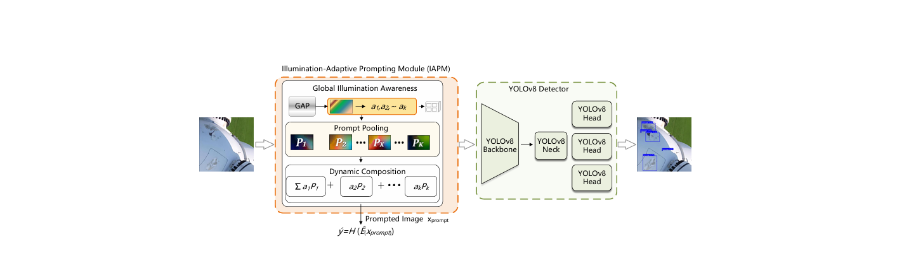

UniIA-DET: Illumination-Adaptive Detection for UAV-Based Wind Turbine Inspection
|
 |
The architecture of the proposed illumination-adaptive detection framework built on top of an off-the-shelf object detector (UniIA-DET).
Abstract
Automated defect detection for wind turbine blades remains challenging
under uncontrolled outdoor illumination, where backlight and low-light condi
tions suppress texture cues, reduce local contrast, and increase false detections.
We address this problem from both data and model perspectives. First, we
construct a Complex-Lighting Wind Turbine Blade Defect Dataset (CL-WTBD)
by integrating heterogeneous UAV-based inspection sources and harmonizing
their annotations into a unified taxonomy. CL-WTBD is balanced across normal
light, backlight, and low-light domains, providing a controlled benchmark for
evaluating illumination robustness in blade defect detection. Second, we propose
UniIA-DET, an illumination-adaptive detection framework built on top of an
off-the-shelf object detector. Instead of relying on a standalone image enhance
ment module or aligning features only in latent space, UniIA-DET introduces an
Illumination-Adaptive Prompting Module (IAPM) before the detector backbone.
The IAPM uses content-driven dynamic routing to compose an input-specific
correction from a learnable prompt pool, which is additively injected into the raw
image to calibrate exposure and contrast before feature extraction. The module
is optimized jointly with the detector using the detection objective, allowing the
correction process to be guided by classification and localization requirements
rather than by perceptual reconstruction criteria. Experiments on CL-WTBD
show that the proposed module improves robustness under harsh illumination.
On the YOLOv8n instantiation, the main benefit of IAPM appears under harsh
illumination: averaged over three seeds, it improves the Backlight mAP@50 from
0.352 to 0.392 and the Low-Light mAP@50 from 0.392 to 0.446, raising the
macro-domain mAP@50 from 0.424 to 0.466, while the global mAP@50 changes
from 0.387 to 0.398, within the run-to-run variation. Additional experiments with
RT-DETR and Mamba-YOLO indicate that IAPM can be attached to different
detector families without modifying their original architectures. These results
demonstrate the practical value of detector-oriented input-space illumination
correction for UAV-based wind turbine blade inspection.1
Links


Experimental Results

|

|
Citation
@article{article,
author = {Xunyang, Su and Chengjia, Wang and Xinghui Dong},
year = {2026},
month = {10},
pages = {},
title = {UniIA-DET: Illumination-Adaptive Detection for UAV-Based WindTurbine Inspection},
journal = {Pattern Recognition},
}